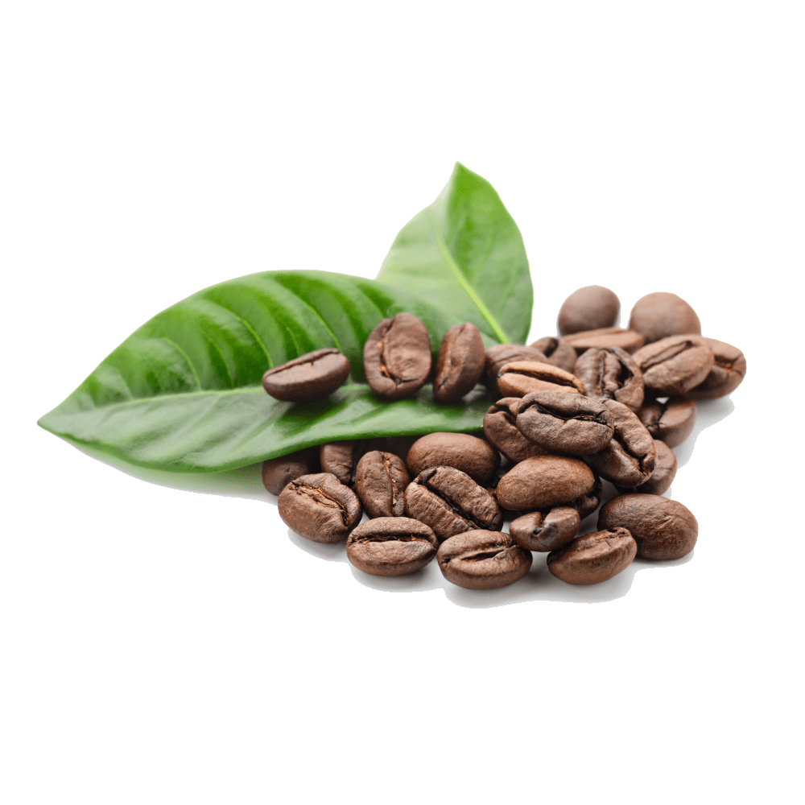
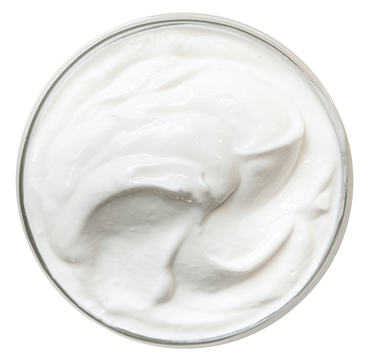
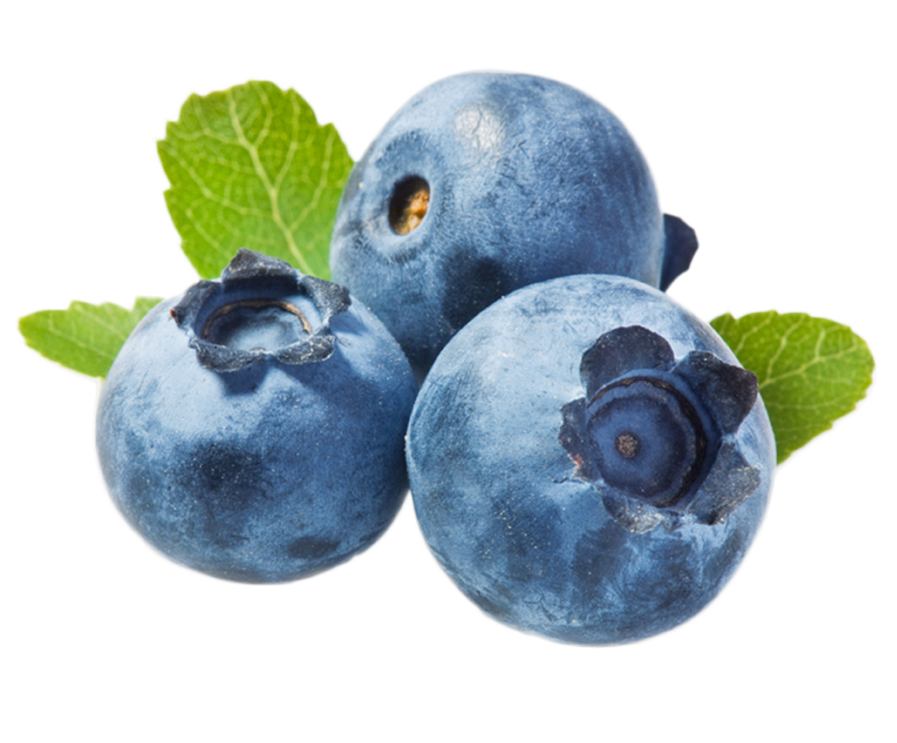

PANDA MILKSHAKE 
200 ml leche
200 g Helado de vainilla
50 ml sirope de chocolate
50 g trozos de kitkat o cualquier chocolate al gusto
100 g nata para montar
PREPARACIÓN
Preparar los vasos colocando un poco de sirope por dentro de las paredes de los vasos. Colocar el helado, la leche, 30 ml del sirope de chocolate y dos piezas de kitkat en la batidora de vaso. Licuar hasta que esté homogéneo y servir inmediatamente. Terminar con nata montada y cacao en polvo.
COLOMBIA MILKSHAKE 
3 Tazas Café Frío colombiano
1 Taza Leche
4 Bolas Helado de Vainilla
2 Cdas Sirope de Café
Nata Montada
PREPARACIÓN
Comenzamos poniendo todos los ingredientes en la batidora (excepto la nata montada), Recuerda esperar a que el caféesté bien frío antes de juntarlo con el resto de ingredientes.
Batimos bien hasta conseguir una mezcla homogénea. Podemos decorar el vaso con un poco más de sirope de Café, servimos el batido de café y decoramos con un poco denata montada por encima.
YOGURT MILKSHAKE 
Un vaso de leche.
300 mililitros de yoghurt de fresa.
1 taza de fresa, rebanadas.
1 plátano maduro.
2 Tazas de fresas.
hielos.
PREPARACIÓN
Dentro de la batidora agrega el plátano, las rebanadas de fresa, el yogurt y la leche. Mientras licuas agrega poco a poco los hielos, la cantidad dependerá de la consistenciaque desees. Si te gusta frio solamente agrega 3, si prefieres que quede tipo frappé 6.
BLUEBERRY MILKSHAKE
300 g de arándanos.
100 g de frambuesas.
180 ml de leche.
75 de azúcar (si es azúcar glass mejor).
Unas gotas de zumo de limón.
PREPARACIÓN
Las frutas pueden estar congeladas, Lo primero que debemos hacer es lavar bien los arándanos,y las frambuesas. Luego, introdúcelos en un recipiente de borde, añade la leche y empieza a batir. Hazlo a velocidad media durante unos segundos.
Ahora, añade unas gotas de zumo de limón para darle un toque de sabor y conservarlo durantemás tiempo y termina de batirlo todo. Cuando lo tengas, puedes colarlo para eliminar las semillas de las frambuesas.
Colócalo en una jarra o botella de cristal e introdúcelo en el frigorífico para que se enfríe.
BARBIE MILKSHAKE 
300g helado de vainilla
85g leche entera
150g fresas frescas, sin tallos y cortadas por la mitad
Cubos de hielo picados
nata Montada
PREPARACIÓN
Coloca todos los ingredientes en la batidora, menos la nata. Dejar unos 2 minutos que se bata bien, y luego añadiremos el hielo. Servir en un baso grande y añadir la nata montada por encima.Ponte en contacto con nosotros y siguenos en nuestras redes sociales